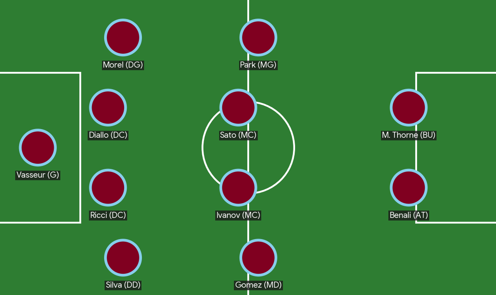

Le FC Maritime 2024/2025

🧤 Le Dernier Rempart
Hugo "Le Mur" Vasseur (Gardien - 34 ans) Style : Un gardien à l'ancienne, autoritaire et impérial dans les airs. Détail : Capitaine emblématique, il porte toujours un bandeau bleu ciel au poignet gauche, un hommage aux marins de Port-Saphir. C'est lui qui dirige la défense d'une voix de stentor que l'on entend jusque dans les tribunes les plus hautes.
🛡️ La Ligne Défensive (Les "Remparts")
La défense du FC Maritime est réputée pour son imperméabilité, mêlant puissance physique et relance propre. Malik Diallo & Enzo Ricci (Défenseurs Centraux) : Le duo : On les surnomme "L'Ancre et la Boussole". Diallo est le roc physique qui gagne tous les duels aériens, tandis que Ricci est le cerveau tactique capable de casser deux lignes adverses avec une seule passe laser en bordeaux. Léa Morel (Latérale Gauche) & Thiago Silva (Latéral Droit) : Le rôle : Ce sont les poumons de l'équipe. Ils ne se contentent pas de défendre ; ils multiplient les courses dans leurs couloirs pour offrir des solutions de centre à Marcus Thorne. Morel est connue pour son tacle glissé d'une précision chirurgicale.
⚙️ L'Entrejeu (Le "Cœur du Ressac")
Le milieu à quatre est le moteur qui dicte le tempo des matchs au Stade des Falaises. Kaito Sato (Milieu Défensif) : L'ombre : Il court en moyenne 12km par match. C'est lui qui effectue le "sale boulot" pour permettre aux créateurs de briller. Sa lecture du jeu lui permet d'intercepter les ballons avant même que l'adversaire n'ait fini sa passe. Sacha Ivanov (Milieu Relayeur) : Le métronome : Technicien hors pair, il est le lien entre la défense et l'attaque. Il joue avec une élégance rare, perdant très peu de ballons sous pression.
🌪️La "Tempête sur les Flancs
Yuna Park & Javier Gomez (Ailiers) : La percussion : Park (à gauche) préfère repiquer dans l'axe pour déclencher des frappes enveloppées, tandis que Gomez (à droite) est un pur ailier de débordement, adepte du un-contre-un pour éliminer son vis-à-vis.
⚔️ Le fer de lance
Le point focal de cette équipe est l'association entre la finesse technique de Clara Benali et la puissance de finition de Marcus Thorne. Dans ce système en 4-4-2, Thorne joue le rôle du renard des surfaces, prêt à conclure les centres venant des ailes de Park ou Gomez.